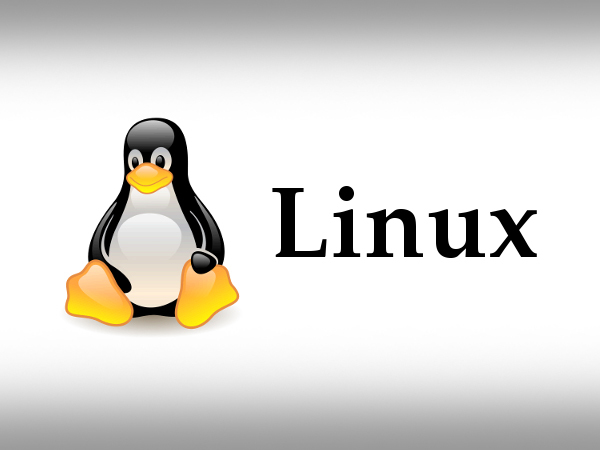

Linux
The Kernel That Dared To Dream.
The Man Behind the Titan
Linus Benedict Torvalds: The man who changed the world
When the world was chained by licenses, trapped behind corporate
walls, and forced to pay for freedom — a storm emerged from the cold
silence of Finland.
No startup funding. No flashy logos. Just a 21-year-old student, a
second-hand PC, and a vision to change the world. He didn’t build
weapons. He built power — the kind that fuels rockets, runs
smartphones, operates banks, controls satellites, and even powers
your fridge. One man, one kernel, and a billion machines bow before
his creation.
While tech titans chased profits, he gave the world something
priceless — freedom. He didn’t walk into boardrooms — he conquered
them from his command line. The world calls it Linux. Developers
call it their religion. And behind it all stands one man who never
asked for the spotlight... but became the sun himself. üñ•Ô∏èüî• üöÄ
LINUS BENEDICT TORVALDS
— The Silent Coder.
The Open-Source Outlaw.
The Man Who Made the Machines March to His Code.
The Linux Kernel: The Silent Core Driving a Loud World.

The Linux kernel is a free, open-source, and highly configurable
operating system kernel that serves as the core layer between
hardware and software in countless computing systems around the
world.
Developed initially by Linus Torvalds in 1991, it has evolved into
one of the most critical pieces of software in modern computing —
forming the foundation of the Linux operating system and driving an
enormous range of devices, from personal computers, servers, and
Android smartphones to embedded systems, routers, smart TVs,
supercomputers, and even spacecraft.
The kernel is responsible for low-level system tasks such as process
management, memory allocation, hardware communication via device
drivers, filesystem operations, and networking, ensuring stable,
efficient, and secure operation of all system components.
Architecturally, it is a monolithic kernel — meaning most core
functionalities run in kernel space for performance — but it’s also
modular, allowing dynamic loading and unloading of drivers and
components.
Developed by thousands of contributors globally and maintained under
the guidance of the Linux Foundation, the kernel is continuously
improved to support new hardware architectures, performance
enhancements, and cutting-edge features. Its portability,
scalability, and freedom under the GPL license have made it a pillar
of the open-source movement and the backbone of critical
infrastructure across industries including cloud computing, mobile,
automotive, finance, education, research, and national defense —
making the Linux kernel not just a piece of software, but a
technological revolution that underpins the modern digital world.
The Core Features of the Linux Kernel:
- Open Source: Linux is free to use, modify, and distribute. Its source code is accessible to everyone.
- Security: Linux is known for its robust security model, user permissions, and minimal malware risks.
- Stability and Performance: Linux systems are highly stable and efficient, even under heavy load and long uptime.
- Flexibility: Suitable for desktops, servers, embedded systems, mobile devices, and supercomputers.
- Multitasking and Multiuser Support: Linux can handle multiple users and processes simultaneously without performance loss.
- Customizability: You can modify everything from the desktop environment to the kernel itself.
- Package Management: Tools like APT, YUM, and Pacman make installing and updating software easy and efficient.
- Multi-platform Support: Linux runs on many architectures — x86, ARM, RISC-V, MIPS, and more.
- Community Support: A vast global community provides free help, tutorials, forums, and documentation.
- No Licensing Fees: Linux is completely free to use, even for commercial purposes.
- Live Boot Capability: You can run Linux directly from a USB or CD without installing it on your system.
- Efficient Resource Usage: Lightweight distributions like Arch or Puppy Linux can run on very low-end hardware.
- Robust Networking Tools: Linux offers advanced networking capabilities for servers, routing, and automation.
- Frequent Updates: Linux gets frequent security and feature updates without major performance hits.
- Filesystem Variety: Linux supports a wide range of file systems like ext4, Btrfs, XFS, ZFS, and more.
Why switch to Linux?
Because Linux isn't just an operating system — it's a philosophy. It’s the belief that technology should serve people, not control them.
In a world where closed systems spy, crash, and lock you in, Linux hands you the key to your own digital freedom. It’s raw. It’s real. It’s not sugar-coated with glossy animations — it’s fast, lean, and built for power.
Under the hood? You’ve got an industrial-grade kernel — the same one trusted by Google, NASA, CERN, Tesla, and Wall Street. Built with C, forged by thousands of developers, hardened by decades of testing — it just doesn’t break.
You can see every line of code. Tweak the terminal. Tear down the desktop. Rebuild it your way. No ads. No bloat. No hidden processes leeching your resources.
In spirit? It’s a movement. A community. A global force of engineers, hackers, students, sysadmins, and dreamers. People who don’t wait for features — they build them. People who don’t just use software — they shape it.
Whether you’re spinning up a server, rescuing old hardware, automating workflows, or learning how computers really work — Linux gives you the tools, the freedom, and the power to master your machine.
So don’t switch to Linux because it’s trendy.
Switch because you’re done being a product.
Because you believe in
control, transparency, and freedom.
üî•
Linux: Built by the people who build the world. Ready for those
who are ready to take control.
üî•